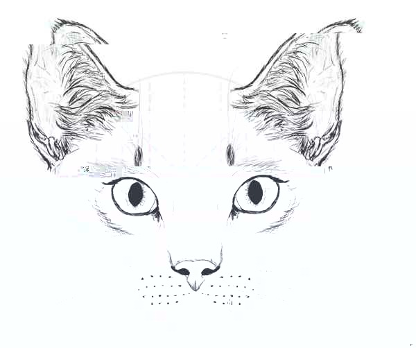
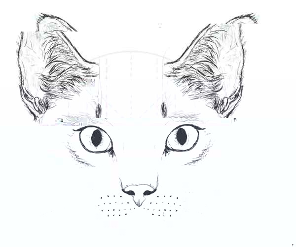

| Manas zināšanas lai realizētu Homework | ___________________________________ | Tāds varētu izskatīties pieņemams Front-end Homework |
| Manas zināšanas lai realizētu Homework | ___________________________________ | Tāds varētu izskatīties pieņemams Front-end Homework |

*termini ir ENG, jo man bija slinkums tehniski un literāli pareizi tos tulkot LV
.
Kaķis pa labi ir vienkārši zīmēts parasts kaķis, bet kaķis pa kreisi ir "glitch art" stilā zīmēts kaķis.
 

Note: Focus On the Solution, Not the Problem.